How to use Git & GitHub#
Hands on workshop. In this workshop we will install software on your laptop/local machine
Getting Started with Git and GitHub (Workshop): In this 2 hour + workshop participants will create a Git initialized folder on their local machine. They will create a Markdown file using an IDE (Integrated Development Environment) and upload a repository with that file to their Github account.
This workshop requires software installation on the participants laptop and familiarity with the Terminal (Mac/Linus) or Git bash (Windows PC)
Required Software and accounts for Git & GitHub Workshop#
For this workshop, you will need your own laptop on which you have administrative permissions (so you can install software). This is a list of the prerequisite installations (or accounts) that are required for this workshop.
Git (required)
Git may already be installed on your computer.
To check on Linux & MacOS: In your terminal, type the following command:
$ git --version
Windows users will need to download and install GitBash
To check on Windows PCs: In GitBash, type the following command:
$ git --version
If you see a version number, you’re all set. If not, go here to download and install
IDE (integrated development environment) (required)
Github (required)
What are Git and GitHub ?#
Why use it? What You Can Do with Git and GitHub ?#
Command-Line Interface (CLI)#
Using git from the command line depends on your operating system (OS)
Git was developed and designed on Linux, so you can using git from the terminal on Linux OS or Mac OS.
macOS: You can find Terminal in the Applications > Utilities folder.
Windows PC: Computers with Windows operating systems do not automatically have a Unix Shell program installed. You will need to install software to use a Unix-like shell environment on Windows.
A shell is a terminal application used to interface with an operating system through written commands.
Bash is a popular default shell on Linux and macOS. Bash is an acronym for Bourne Again Shell.
Git Bash is an application for Microsoft Windows environments which provides an emulation layer for a Git command line experience. Git Bash is a package that installs Bash, some common bash utilities, and Git on a Windows operating system.
If you are using Windows, to in order to use the git commands, you will use Git Bash.
Git for Windows provides a BASH emulation used to run Git from the command line.
Download and install Git For Windows like other Windows applications.
Once downloaded find the included .exe file and open to execute Git Bash.
Here is a CLI review
*Note for computers with multiple users (staff of or other shared computers)
During this workshop, you’ll be communicating with GitHub from your local computer via the command line (the Terminal or the Git Bash on Windows). This section reviews some of the basic commands that will also be used in this workshop.
In addition to the command line, you’ll be using your text editor and your browser. Before continuing, its important that we clearly distinguish between these three different spaces or environments:
Your plain text editor where you’ll be writing your document is on your local computer.
That document is initially saved in a git-enabled repository on your local computer.
Your browser is where you’ll be uploading your repository to GitHub, a cloud service.
Your terminal is where you’ll be communicating with GitHub to send the repository and project files back and forth between the cloud (which you can view through the GitHub website) and your hard drive.
Because you’ll be moving between these three spaces throughout the workshop, you may want to use (command (⌘) + tab) or (control + tab) to move quickly between the three windows on your desktop.
Accessing the Terminal#
macOS#
Hold the command (⌘) key and press the space bar at the same time to bring up the “Spotlight Search” window. Type terminal, followed by enter to quickly open the Terminal.
Windows#
Press the windows button on your keyboard. When the search menu pops up, type git bash and press enter.
Where is CLI#
Orienting Yourself in the Command Line: Folders


Check your current directory by typing the following command into your terminal and hit enter:
$ pwd
Now, use the following command to go up one directory:
$ cd ..
To navigate down one directory in your terminal, use the cd command followed by the name of the subdirectory you want to enter
$ cd <subdirectory-name>
Check your current directory again using the following command. You should be back in your “home” directory:
$ pwd
Practice going back and forth between your Desktop and your home directory.
When finished, go to your Desktop folder and check that you’re there with pwd.
You can also navigate to the location where you want to create the folder
$ cd path/to/parent/folder
You can create the folder anywhere on your hard drive by typing the following into your terminal and hitting enter.
$ cd <directory-name>
Let’s practice this command by using it to take us to our Desktop. Type the following command into your terminal and hit enter.
$ cd Desktop
This will change your current working directory from /Users/<your-name> to /Users/<your-name>/Desktop.
Note for staff or company computers#
If your computer has multiple users you can choose your user profile in the C: drive or you type the following command in your terminal and and hit enter
$ cd C:/Users/[put your username such as SMU ID here]/Desktop/
Making a Projects Folder#
In this session, we will be making a resume (or syllabus) and using Git to keep track of our revisions. Let’s create a Git project folder.
If you don’t have a projects folder on your desktop, create one using the following command:
$ mkdir projects
From Desktop, Navigate into your projects folder using the following command:
$ cd projects
Then create a git-practice folder with the following command:
$ mkdir git-practice
Navigate into the new git-practice folder using the following command:
$ cd git-practice
At this point, when you type pwd, your folder structure should look like this:
$ pwd
/home/<username>/Desktop/projects/git-practice
To see what files are in a folder, ls, it will show what files are there. To see all files, including invisible, type ls -a
$ ls
$ ls -a
Authenticating to Remote Git Repositories
“Git provides multiple protocols for authenticating to and interacting with remote Git repositories.
There are three main approaches you can take:
Using a personal authentication token or password
Using an SSH key
Using your GitHub password with 2-factor authentication”
See these directions from Berkeley Statistics
For additional directions, see Github’s Authentication documentation
Shell Cheat Sheets#
Action |
Files |
Folders |
|---|---|---|
Inspect |
ls |
ls |
View content |
cat |
ls |
Navigate to |
cd |
|
Move |
mv |
mv |
Copy |
cp |
cp -r |
Create |
nano |
mkdir |
Delete |
rm |
rmdir, rm -r |
Glossary#
Pro-tip for the Command Line: How to exit unknown screens
If you’re ever stuck or “trapped” on the command line, try running through these common exit commands to return to the prompt:
control + c
control + d
qfollowed by enter:qfollowed by enter
control + c attempts to abort the current task and restore user control. control + d escapes the current shell environment—if you use it at the normal $ prompt, it will end the current command line session. q is often used as a command (followed by enter) to escape from specific programs like less. :q is the command used in vi that changes the mode of interaction (:), allowing you to enter the q, a one-letter command to quit, which must be followed by enter. Thus, it’s a command specific to vi.
Git#
Setting Up Git
Through this section, you’ll be checking your installation and configuring Git with your own name and information.
Check Your Installation#
First, let’s make sure Git has been successfully installed. In your terminal, type the following command:
$ git --version
If you see a version number, you’re all set. If not, follow the installation instructions here or here.
Configuring Git on Your Computer#
Our first step in working with Git is letting the software know who we are so it can track our work and attribute our contributions. This information is useful because it connects identifying information with the changes you make in your repository.
Type the following two commands into your command line, replacing the “John Doe” and “johndoe@example.com” with your name and email (use quotations where you see them). These do not necessarily need to be the name and email you used to sign up for GitHub. Remember, these are different spaces and different softwares.
$ git config --global user.name "John Doe"
$ git config --global user.email johndoe@example.com
To check your set-up, type the following command into your terminal:
$ git config --list
You should get something that looks like this except with whatever information you entered previously:
user.name=Superstar Git User
user.email=gitsuperstar@gmail.com
Creating a Project Folder#
The next step is to initialize the project folder that we want Git to track. Even though we configured Git for our computer, Git doesn’t start tracking every single file on our computer. That would turn into a headache quickly. We only want Git to track changes for files within specific folders/projects.
When we initialize a folder, we are telling Git to pay attention to it. This only needs to happen once because what is actually happening through this process is Git is adding a hidden subfolder within your folder that houses the internal data structure required for version control. After initialization, Git is ready to track the files within the folder. The folder is now considered a Git repository.
First, use cd, navigate to the git-practice folder (inside projects). From your home directory, you can do all of them in one command by typing the following into your terminal:
$ cd Desktop/projects/git-practice
Next we’re going to initialize our repository using the git init command, which should generate the following output:
$ git init
Initialized empty Git repository in /home/<your-username>/projects/git/.git/
Now Git is tracking our directory. However, it has not done any versioning yet. This is because 1) we haven’t told Git to take a snapshot yet, and 2) there are no files in the folder to take a snapshot of. For now, Git knows this folder exists and is prepared to take a snapshot of the files when you tell it to.
Before version control is useful, we’ll have to create a text file for Git to track. For this session, the file we will track will be a course syllabus—we’ll create that next.
VSCode (IDE)#
integrated development environment (IDE)
In the content for this workshop, the examples use Visual Studio Code
Visual Studio Code (recommended) You can use any IDE but for our purposes, Visual Studio Code (“VS Code”) will be used.
We will be creating a file in the project folder (plain text or Markdown)
To quickly create a plain text file in your practice folder, enter the following command
$ echo "hello" > hello.txt
Creating a Markdown file using an IDE#
To create a plain text file, we’re going to switch to our text editor, Visual Studio Code, to create and edit a file named syllabus.md and save it to our git-practice folder. The .md extension indicates that it is a Markdown file, which is a special file format we will dive into in the next section.
In terminal, check to make sure you are in your git-practice folder. (Hint: use pwd to see what directory you are currently in.)
We are going to open VSCode and create a markdown file. Open VSCode it using the Start Menu on Windows or Spotlight Search on macOS as you would any other software.
-Then click
File > New Filein ‘Enter File name” type
<filename>.md.md indicates a markdown file.
use the dialog to navigate to the
/Users/<your-name>/Desktop/projects/gitfolder and save<filename>.mdfile there.
For future reference: You can set shortcut commands for your IDE: See this page for configuration commands for text editors
$ git config --global core.editor "Add specific command for text editor"
For example, you can set a shortcut command for VSCode, which will be:
$ code <file name>
You should see a window appear that looks similar to this:
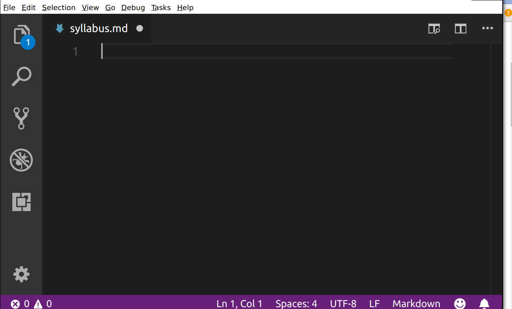
We’ll be typing our markdown into this file in the Visual Studio Code window. At any time, you can save your file by hitting control + s on Windows or ⌘ + s on macOS. Alternatively, you can click the File menu on the top right, then select Save from the dropdown menu.
Saving frequently is advised. When we get to the version control functionality of Git, only changes that are saved will be preserved when a version is created.
Creating Content Using Markdown#
We’ll be using Markdown to write a file (it can be a syllabus, a CV, a profile page,etc,) and then using Git to track any changes we make to it. Markdown allows us to format textual features like headings, emphasis, links, and lists in a plain text file using a streamlined set of notations that humans can interpret without much training. Markdown files usually have a .md extension.
Markdown is a markup language for formatting text. Like HTML, you add markers to plain text to style and organize the text of a document.
Whereas you use HTML and CSS with WordPress, you use Markdown to render legible documents on GitHub. Markdown has fewer options for marking text than HTML. It was designed to be easier to write and edit.
For comparison, you learned to create headers in HTML like this:
<h1>My Syllabus Heading</h1>
In Markdown, we insert headings with a single hash mark like this:
# My Syllabus Heading
A sub-heading (H2) heading uses two hash marks like this:
## Readings
The lessons of this workshop were originally written in markdown. You can see here what they look like in their raw, unrendered form.
Compare that with this—the source code for this lesson’s web page, written in HTML here.
Markdown is also arguably more sustainable and accessible than formats like .docx because of its simplicity and related ability to be read across multiple platforms. Use of Markdown is also supported by document-conversion tools like Pandoc that can change a markdown file to an .epub with one command entered into your terminal.
Here are a few more key elements to get you ready to make your own syllabus in Markdown.
To provide emphasis, place asterisks around some text:
*This text will appear italicized.*
**This text will appear bold.**
For emphasis, you need to mark where it should start and where it should end, so you need asterisks at the beginning and end of whatever text is being emphasized.
To create a bulleted list, put a hyphen at the beginning of each list item:
- Reading one
- Reading two
- Reading three
To create a link, put the anchor text (the text you will see) in square brackets and the URL in parentheses, directly following the anchor text in brackets. Don’t put a space between them:
I teach at [SMU](https://www.smu.edu/).
Paragraphs of text are denoted by putting a blank line between them:
This is a paragraph in markdown. It's separated from the paragraph below with a blank line. If you know HTML, it's kind of like the <p> tag. That means that there is a little space before and after the paragraph when it is rendered.
This is a second paragraph in markdown, which I'll use to tell you what I like about markdown. I like markdown because it looks pretty good, if minimal, whether you're looking at the rendered or unrendered version. It's like tidy HTML.
Challenge#
Use these five elements—headings, emphasis, lists, links, and paragraphs—to create a resume or syllabus. Have a main heading that gives the course title (one #), then subheadings for, at least, course info and readings. Use emphasis (*) for book titles and try to get a list in there somewhere.
If you want an a more advanced challenge, you can review some additional markdown elements on this page and add some extra features like images, blockquotes, or horizontal rules.
Example#
You can look at an example syllabus in raw text form here. When it’s rendered by GitHub, it looks like this. When editing the markdown file in Visual Studio Code, it might look like this:

Tips#
Visual Studio Code also has a preview feature for your markdown. Hit the preview button on the top right while editing your markdown file:
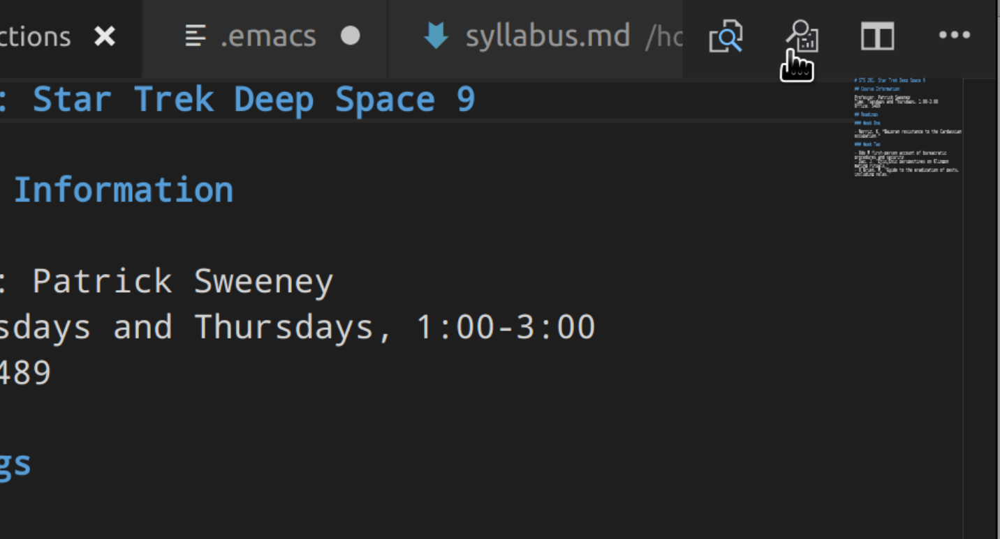
You’ll get two side-by-side panels. Your markdown file will be on the left, and your rendered preview will be on the right:
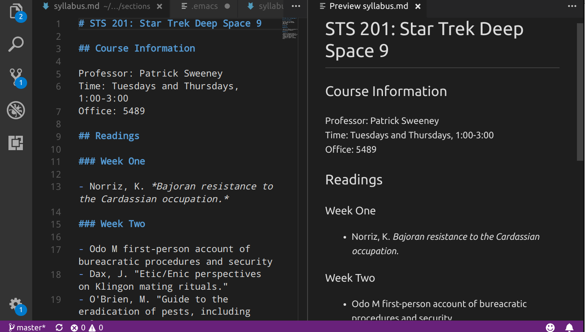
Remember to save your work—regularly!—with control + s on Windows or ⌘ + s on macOS.
Staging and Committing Changes (Git)#
Git’s primary function is version control, or to track a project as it exists at particular points in time. Now that we have a file to track—our syllabus.md—let’s use Git to save the current state of the repository as it exists now.
A Metaphor for Adding and Committing#
In Git, a commit is a snapshot of a repository that is entered into its permanent history. To commit a change to a repository, we take two steps:
Adding files to a “staging area,” meaning that we intend to commit them.
Finalizing the commit.
Staging a file or files is you telling Git, “Hey! Pay attention these files and the changes in them”.
Making a commit is a lot like taking a photo. First, you have to decide who will be in the photo and arrange your friends or family in front of the camera (the staging process). Once everyone is present and ready, you take the picture, entering that moment into the permanent record (the commit process).
Why do you need both steps? Sometimes when you’re working on a project you don’t want to pay attention to all the files you changed. Perhaps you fixed a bug in some code, but also did some work on your manuscript document. You may want to only commit the changes you made to the code because you still haven’t finished your thoughts on the manuscript. You can stage, or add, the code file so Git knows to only commit the changes made to that file. Later, you can stage and then commit the manuscript changes on their own once you’ve finished your thought.
Staging Changes with the add Command#
First, let’s see what state Git is currently in. We do that with the git status command. It’s a good idea to use this command before and after doing anything in a Git repository so you can always be on the same page as the computer.
Make sure you’re in your /home/<your-name>/Desktop/projects/git-practice directory using the pwd command in the terminal. Once you’re there, enter git status and you should see the following output:
$ git status
On branch main
No commits yet
Untracked files:
(use "git add <file>..." to include in what will be committed)
syllabus.md
nothing added to commit but untracked files present (use "git add" to track)
“Nothing added to commit” means that we have initialized our repository, but haven’t made any commits yet. If you’re instead getting a message that begins with the word fatal when you use git status, you may be in the wrong directory or perhaps you haven’t run the git init command on your directory yet.
Let’s follow the recommendation in the status message above and use the add command to stage files, making them ready to be committed.
To see more details, use git log.
$ git log
We will go ahead and add syllabus.md by writing the following in the terminal:
$ git add syllabus.md
You should see no output from the command line, which should be interpreted as a the above command succeeded. It is what we call “succeeding silently.” Let’s run git status again to have a “sanity check”—to make sure that things have changed. You should see output like this:
$ git status
On branch main
No commits yet
Changes to be committed:
(use "git rm --cached <file>..." to unstage)
new file: syllabus.md
The new file: syllabus.md should be highlighted in green to show that it’s ready for commit.
This is Git telling you, “Ok, I see the file(s) you’re talking about.”
Committing Changes#
Now that our files have been staged, let’s commit them, making them part of the permanent record of the repository. In the terminal, type:
$ git commit -m "Initial commit of syllabus file"
The -m flag provides that the message following the flag (in quotation marks) along with the commit. The message will tell others—or remind a future version of yourself—what the commit was all about. Try not to type git commit without the -m flag—there’s a note about this below.
After running the command, you should see output like this:
[main (root-commit) 8bb8306] Initial commit of syllabus file
1 file changed, 0 insertions(+), 0 deletions(-)
create mode 100644 syllabus.md
This means you have successfully made your first commit in the repository—congratulations! There are a few things going on in this message. The relevant information for you for now is the second line, which tells you that one file was changed, and there were no insertions or deletions. You have a fresh new file!
Let’s check the state of our repository after the commit by running git status:
$ git status
On branch main
nothing to commit, working tree clean
This means that everything in the repository is successfully committed and up-to-date. If you edit your syllabus file or create a new file in the repository, the message you get with git status will instead list files that have uncommitted changes.
Let’s run one other command to see the effect our commit has had. Enter this command:
$ git log
You should see output similar to this:
commit 8bb8306c1392eed52d4407eb16867a49b49a46ac (HEAD -> main)
Author: Your Name <your-email-here@gmail.com>
Date: Sun May 20 16:03:39 2018 -0400
Initial commit of syllabus file
This is the log of commits, comprising a history of your repository. There’s only one commit here now, though. If you don’t see a prompt (the $) after running git log, you may need to press the q key (just the q key by itself) to return to the command line.
Why Do We Need to Use the -m Flag?#
The -m flag is useful for human purposes and technical purposes. For human purposes, the -m flag helps you keep track of the changes you’re making. Version control is most useful when you can confidently return to a specific version. It can also help you be more structured in your approach to making changes—your notes to self are limited, so to make them clear, you might make commits after specific tasks are completed. If you update readings for the first week of classes or if you add another reading, you will want to make a commit. This can also make it easier to reverse a specific change in the future.
Also, if you type git commit by itself, git will open the command line’s default text editor to allow you to enter the commit message in a file-like environment. It looks something like this:
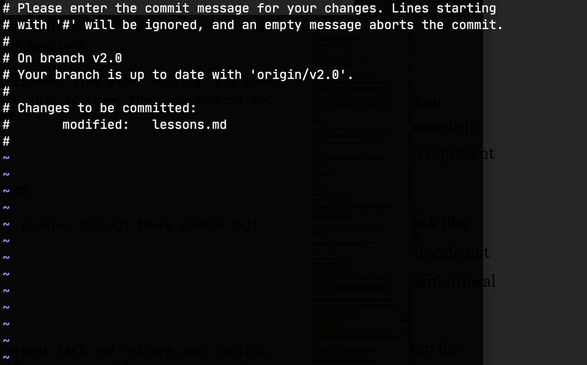
This unfamiliar screen is the default text editor, vi, and it requires some knowledge to use. We don’t teach it as part of our sessions, but if you find yourself stuck in this screen, you can try this trick to leave that environment and return to your usual command prompt. Type :q and then press enter. You should be back to the command line with a message saying:
Aborting commit due to empty commit message.
If you make a mistake where you include an opening quotation mark but forget a closing one, you might accidentally end up inside a “quote prompt.” You will know you’re there when your command prompt changes to quote>. If this happens, you can just keep writing as much of your commit message as you want, and then end it with the same quotation mark that you opened the commit message with.
Another option is to press control + c on your keyboard, which will exit the quote prompt and cancel any commits you were trying to perform.
Github#
Pushing to GitHub#
-Now we will push the repo you made on your local machine to the cloud (Github)
Github (required)
Create a GitHub account (required)
You need to have a GitHub account for the purposes of this workshop. It is free to sign up via this link.
For SMU affiliates (students, faculty,staff): If you already have an account, you do not need to create another account. In the settings section of your personal account, you can add additional emails, such as your SMU email.
If you are an educator or a student, you might also qualify for the GitHub Education Pack, which you can read more about here
Authenticating to Remote Git Repositories
“Git provides multiple protocols for authenticating to and interacting with remote Git repositories.
There are three main approaches you can take:
Using a personal authentication token or password
Using an SSH key
Using your GitHub password with 2-factor authentication”
See these directions from Berkeley Statistics
For additional directions, see Github’s Authentication documentation
Now, let’s connect the directory you made to GitHub. GitHub is a service that allows us to host files, collaborate, and find the work of others. Once our syllabus is on GitHub, it will be publicly visible.
Go to GitHub in your browser and click the plus sign in the upper right hand corner.
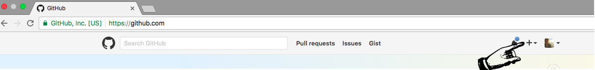
After clicking the plus button, select New repository from the dropdown menu.
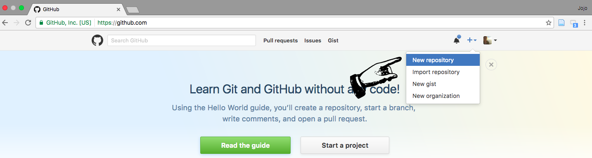
After clicking New repository, you’ll have to enter some information, including a name and description for your repository.
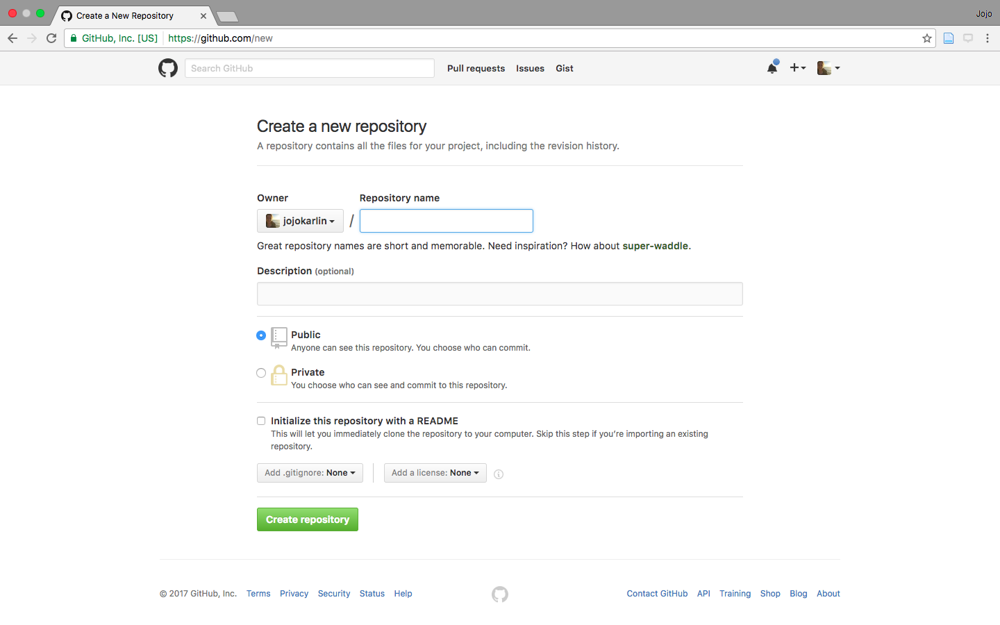
Choose a name, such as
git-practice.Enter a description, such as
Test syllabus for learning Git and GitHub.Keep the
Public — Anyone can see this repositoryselector checked.Do not select
Initialize this repository with a READMEsince you will be importing an existing repository from your computer.Click
Create repository.
You should end up inside your newly created git-practice repo. It will look like a set of instructions that you might want to use to connect your GitHub repository to a local repository.
The instructions we want consist of three lines underneath the heading ...or push an existing repository from the command line. The arrow in this screenshot points to where these directions are on the page:
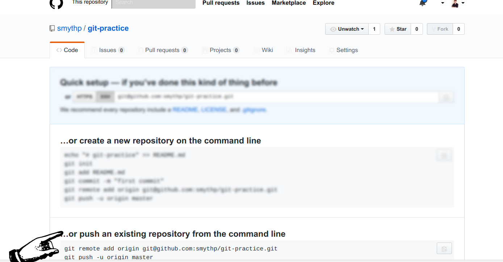
Copy out the first command and paste it in your terminal. It should look something like this:
git remote add origin https://github.com/<username>/<repository-name>.git
You’ll need the command copied from your new repo, since it will contain the correct URL.
Next, paste the second command. It will look exactly like this:
git branch -M main
Finally, paste the third command. It will look exactly like this:
git push -u origin main
If you have not used git before, you will need to authenticate with GitHub, and a window will pop up asking you to sign in. Click Sign in with your browser:
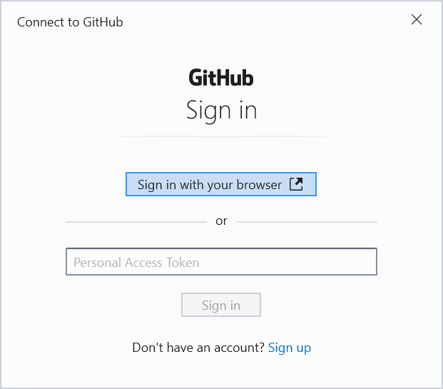
Your browser should open a window asking you to “Authorize Git Credential Manager.” Click the green Authorize GitCredentialManager button:
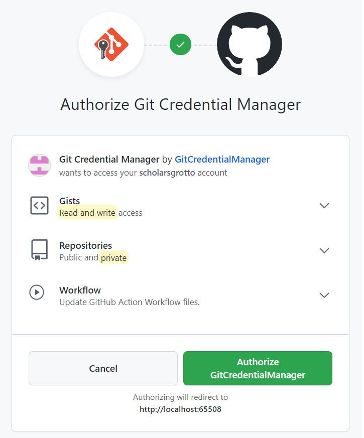
You should see a message that authentication succeeded. If so, you may now close the browser window and return to the command line, where you should see output like this:
Total 4 (delta 3), reused 0 (delta 0)
remote: Resolving deltas: 100% (3/3), completed with 3 local objects.
To github.com:<repo-name>/git.git
916998f..9779fa7 master -> master
If you see output like this, go back to your new repository page in the browser and click the Refresh button. You should see your syllabus.md file on GitHub! Your git credentials are also now stored locally, so you should not need to authorize the credential manager again from that computer.
Contributing content#
There are many ways to contribute to a GitHub repo, from creating issues that suggest improvements to specific files to creating entirely new sessions. We will discuss various modes of interaction with a repo, including forking a repository to your account, creating issues and pull requests.
Creating Issues#
A critical and relatively accessible way to contribute back to a repo is to create an issue on GitHub. While reading a repo on GitHub, you may encounter inconsistencies, typos, sections that need clarification, or typographical errors. When this happens, you can open an issue to let them know about the problem or potential improvement.
To open an issue, you must be in a GitHub repository. In the menu bar at the top center of the page, click the Issues tab.
 .
.
After clicking the issues tab, you will see a screen with the currently open issues, if any. To create a new issue, click the large green button on the right of the page.

On the New Issue page, there is only one required field—the issue title. However, consider leaving a detailed explanation of the issue, including which file you encountered it, if relevant. You can use markdown formatting in the body of your issue.
To complete your issue, click the green button labelled Submit New Issue.
![Image showing where the submit new issue button is. In the issue body box, the message reads "In loop.md, I noticed that the index of the example is flowers[1], which is not "rose" as the output indicates. Looks like it should be 0."](_images/finish_new_issue.png) .
.
Cloning and Forking#
GitHub was built for sharing and collaborating on projects. A key advantage of the platform is that you can find lots of bits of software that do many different things—such as code for plugins for WordPress or Leaflet. Increasingly, you might find syllabi or open writing projects. If a project is public, you can save a copy of it to your local machine, work on it, save your amendations and share it on your own GitHub account. Like we’ve already mentioned, GitHub usefully helps track attribution along the way.
Cloning and forking are the basic functions of this capability. Each are first explained below, and followed by an example and activity to further explain.
Cloning#
Cloning a repository means making a copy of a repository on GitHub, to download and work on locally—on your local machine. By entering the following code into your terminal, you can clone any public directory on GitHub:
$ git clone <repository-url>
When you clone a repository from GitHub, the folder that shows up on your local machine comes built-in with a few things. First, Git is already present, so you don’t need to initialize the folder. Also, the connection between your local copy and the online repository is already made, so git push origin main will work (no -u flag needed).
For practice, let’s clone the repository for this workshop about Git and GitHub, which lives on GitHub.
First, let’s navigate back to your Desktop folder.
$ cd ~/Desktop
Remember that the ~ refers to your home directory. Now let’s find the URL we need to clone the lesson.
First, follow this link to the main page of this lesson on Git and GitHub.
On the main page, there should be a green Code button on the right side:
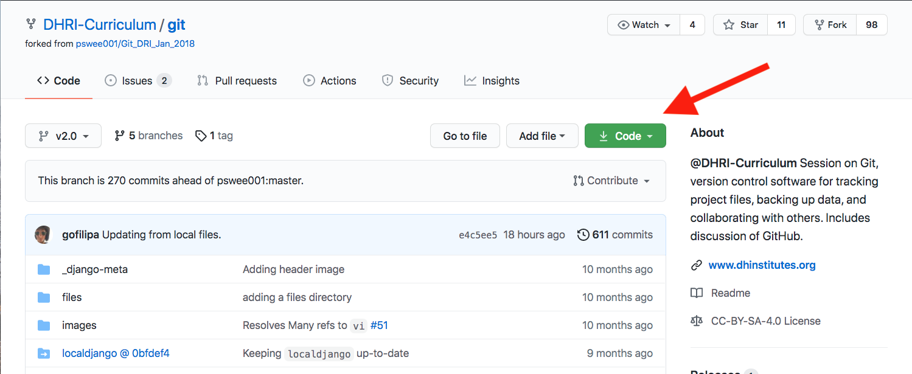
Click the green button and you will see a box with highlighted text under a heading that says Clone with HTTPS. If you instead see Cloning with SSH, click the small link that says Use HTTPS.
Now copy out the text in the box:
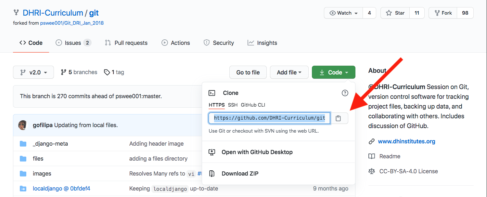
Now that you have the text copied, go back to your terminal. Remember, you should be on the Desktop. (Hint: Use pwd to find out what your current working directory is.)
Once you are in the Desktop, type:
$ git clone <copied-url>
If the command is successful, the full Git and GitHub workshop’s text will be replicated on your local machine. To navigate into the folder, its name is git and you can use the cd command to access it:
$ cd git
Use the ls command to take a look at the various files in the lesson folder.
Cloning can be especially useful when you’re joining a group project that is hosted on GitHub, and you want your changes to eventually be pushed and shared with that same repository.
But maybe that is not possible or ideal. Maybe you don’t want to contribute your changes to someone else’s repository. Maybe you want to make a derivative of their folder for yourself, on your GitHub account, and make changes there.
Forking is the step you could take to do this.
Forking#
By default, you will not have access to directly modify repos. In the world of free and open source software, this is common—usually, only the creator of a repository and certain core contributors can add and modify files in a repository. However, this doesn’t mean that you cannot modify the repo and make it your own.
If you wish to create your own version of the repo for your own use , the first step is to fork the relevant repository. That means to make a copy of it under your own account on GitHub, one in which you have access to modify files. Once you have forked a repository, you can create a new lesson based on it. Because the (majority of ) curriculum is under a Creative Commons license, you may use any module as the basis for a new lesson and share freely, as long as you provide attribution and share under the same license.
To fork a repository to your account, click the Fork button at the top right of any repository on GitHub.

After clicking the fork button, if you’re a member of an organization on GitHub, you may see a screen asking you to which account you wish to fork the repository. Choose your personal account. If you are not a member of an organization, you will not see this screen.
Once you have clicked Fork and (possibly) chosen an account or organization, you will see a screen showing you that the fork is in progress:

Once the fork is complete, you will be directed to a screen showing the repository in your own account.
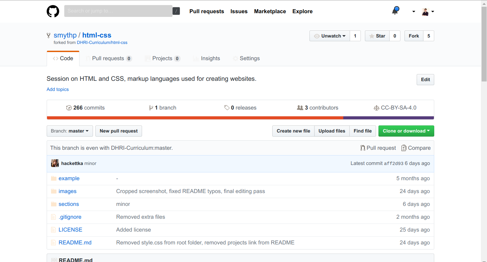
Forking a repository means making a copy of someone else’s repository on GitHub, and saving it to your account on GitHub. This function happens within GitHub, and has nothing to do with what is happening on your local machine. Note that forking will not automatically make the repository appear as a folder on your computer; that’s the role of cloning.
In order to “fork” the git repository into your own GitHub account, follow these steps.
First, go to the repository for this workshop on GitHub. Note the Fork button in the upper right hand corner. By clicking that button, you can copy, or fork, this repository to your account.
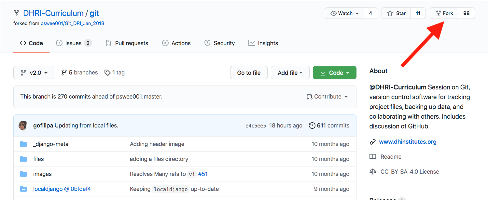
Doing so would also adjust the attribution information in the upper left hand corner. Your username would replace SouthernMethodistUniversity, showing that you are looking at a copy of the repository on your account now. Additionally, it will reference the origin account, in this case, SouthernMethodistUniversity below after forked from, since this was the origin point of your fork.
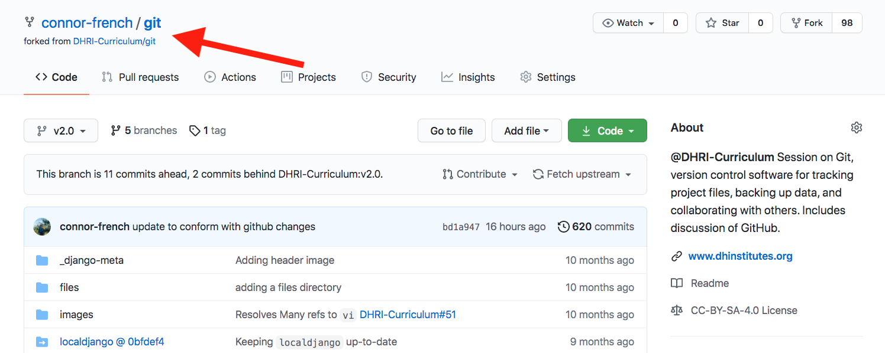
Your local machine would come into play when you want to clone that repository so you can work on it locally. This also means that when you push those changes to GitHub, you would be pushing them to a forked repository associated with your own account.
You might use this method if you were going to teach your own Git & GitHub workshop. You could use our repository as a base for getting started, and add more examples or change some language, clarify something further, or create a connection to another workshop you are giving, etc. This allows us to continue to use the workshop as we have it as well. Also, maybe at a later time, we want to merge some of your changes with ours. We can do that too by revisiting your version history.
Creating a pull request#
A pull request allows you to make a specific suggestion or set of suggestions on a repository that can be accepted by the owner of that repository. Basically, you are creating a new version of the target repository, pointing to it, and saying, “This is what I think your repository should look like.” If the owner of the target repository agrees with you, they can click a button on GitHub that allows them to incorporate the changes.
To do a pull request takes a few steps:
Fork the repository as above.
Clone the forked repository to your local machine.
Make the changes you intend to propose locally.
Add, commit, and push your changes to the forked repository.
Using the GitHub interface, initiate the pull request by navigating to the “Pull requests” tab.
Let’s step through these steps in more detail.
First, fork the repository to which you wish to submit a pull request. Instructions for forking are available in the previous section on forking.
Next, clone the forked repository to your computer by clicking the
Clone or Downloadbutton, copying the link, and using the
git clone <copied-link>
command in your terminal.
Once you’ve cloned the repository, use a text editor such as VS Code to make the changes you wish to propose to the target repository. You can make any number of changes in any number of files.
Once you have finished editing, use the add command to stage your changes, commit them, and then push them back to your forked repository on GitHub.
git add -A
git commit -m "Changes proposed for pull request"
git push
Note that you can add files one by one instead of using the -A flag to add all files, and that you should use a more specific and description commit message than the generic one provided above.
5 .Once your changes have been pushed to GitHub, open the web interface to the repository and refresh the page. It’s easy to miss it in the interface, but there will be a notification about the commit you just made. Within that notification, click the Pull Request button.

If you can’t find the notification, or if it disappears, you can also begin the pull request process by clicking the Pull Request tab and clicking the green New Pull Request button.
Once the pull request is initiated, you will encounter a screen that compares the changes between your forked repository and the target repository.

After reviewing, click the green Create Pull Request button. You will have a chance to add a comment, and the interface is similar to the interface when creating issues.
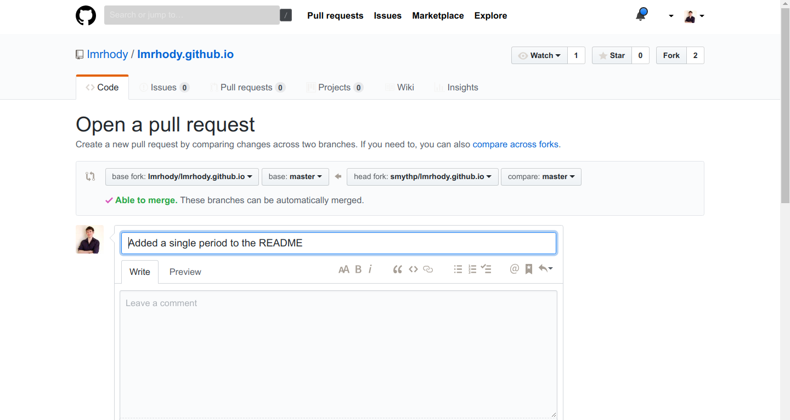
After adding a descriptive message, click the green button to finalize the pull request. You will be taken to a view of the completed pull request.
Now it’s up to the repository owner if they wish to accept the request, initiate a conversation with you, or—which sometimes happens—ignore or reject your request.
Conflicts#
Collaborating#
How can I use version control to collaborate with other people?
A BASIC COLLABORATIVE WORKFLOW
In practice, it is good to be sure that you have an updated version of the repository you are collaborating on, so you should git pull before making our changes. The basic collaborative workflow would be:
update your local repo with git pull origin main,
make your changes and stage them with git add,
commit your changes with git commit -m, and
upload the changes to GitHub with git push origin main It is better to make many commits with smaller changes rather than of one commit with massive changes: small commits are easier to read and review.
Challenge#
Fork and clone the repository for Github’s Introduction to GitHub
Note not only what you are doing, but also where you are working when completing these two different tasks.
Make changes to the files on your local machine. Remember to save them!
Use the 3-step process of stage, commit and push to return the amended files to the repository on GitHub.
Solution#
Rather than write out the solution here, I want to encourage you to go back through the lessons as needed.
You’ll know you’ve completed step one when the project folder (called \introduction-to-github-main) shows up on your local machine.
After you’ve made and saved the changes, you’ll know you’ve completed step three when your changes appear in the project folder on your GitHub account.